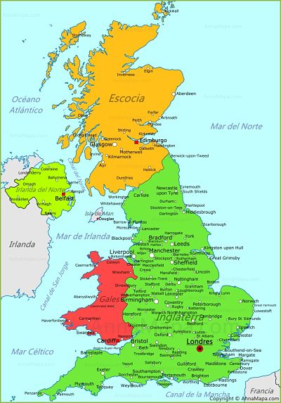

El Reino Unido (en inglés, United Kingdom),denominado oficialmente Reino Unido de Gran Bretaña e Irlanda del Norte (United
Kingdom of Great Britain and Northern Ireland),nota 3 es un país soberano e insular, miembro de la Unión
Europea,nota 1 ubicado al noroeste de la Europa Continental. Su territorio está formado geográficamente
por la isla de Gran Bretaña, el noreste de la isla de Irlanda y pequeñas islas adyacentes. Irlanda del
Norte es la única parte del país con una frontera terrestre, la que la separa de la República de Irlanda.
Gran Bretaña delimita al norte y al oeste por el océano Atlántico, al este por el mardel Norte, al sur
por el canal de la Mancha y al oeste por el mar de Irlanda.

El Reino Unido es un Estado unitario comprendido por cuatro naciones constitutivas: Escocia, Gales, Inglaterra e Irlanda
del Norte.9 Es gobernado mediante un sistema parlamentario con sede de gobierno y capitalidad en Londres,
pero con tres administraciones nacionales descentralizadas en Edimburgo, Cardiff y Belfast, las capitales
de Escocia, Gales e Irlanda del Norte, respectivamente. Es una monarquía parlamentaria siendo Isabel
II la jefa de Estado. Coloquial y erróneamente se denomina Gran Bretaña e Inglaterra, consecuencia delmayor
peso de ambos (territorio y reino respectivamente) dentro del Estado. Las dependencias de la Corona de
las islas del Canal —Jersey y Guernsey— y la Isla de Man no forman parte del Reino Unido, si bien el
Gobierno británico es responsable de su defensa y las relaciones internacionales.10
Es un país desarrollado que por su volumen neto de producto interno bruto es así la quinta economía mundial.
Fue el primer país industrializado del mundo11 y la principal potencia mundial durante el siglo XIX y
el comienzo del siglo XX,12 (1815-1945), pero el costo económico de las dos guerras mundiales y el declive
de su imperio en la segunda parte del siglo XX disminuyeron su papel en las relaciones internacionales.
Sin embargo, aún mantiene una significativa influencia económica, cultural, militar y política y es una
potencia nuclear. Es un Estado miembro de la Unión Europea, uno de los cinco miembros permanentes del
Consejo de Seguridad de Naciones Unidas con derecho a veto, miembro del G8, el G-20, la OTAN,
la OCDE, la UKUSA, la Mancomunidad de Naciones y la Common Travel Area.
El Ejército, la Marina Real y la Royal Air Force se
conocen colectivamente como las Fuerzas Armadas Británicas. Las tres fuerzas son administradas por el Ministerio
de Defensa y controladas por el Consejo de Defensa, presidido por el Secretario de Estado para la Defensa.
Las tropas británicas son unas de las que cuentan con un mejor entrenamiento, además de ser las más avanzadas
tecnológicamente. Según diversas fuentes, incluyendo el Ministerio de Defensa, el Reino Unido tiene el tercer
o cuarto presupuesto más alto para gastos militares a nivel internacional, a pesar de contar solo con el
25.º ejército más grande en términos de personal.
Actualmente, el gasto total en defensa representa el 2,5 % del PIB.82 La Marina es una armada de agua azul, una de las tres
que sobreviven, junto con la Armada francesa y la Armada de los Estados Unidos.83 El 3 de julio de 2008,
el Ministerio de Defensa firmó varios acuerdos con un valor de 3,2 millones de £ para construir dos nuevos
portaaviones.84 El Reino Unido es uno de los de cinco países (junto con Estados Unidos, China, Rusia y Francia)
que puede estar en posesión de armas nucleares,85 utilizando un submarino de clase Vanguard, que cuenta con
el sistema de misiles balísticos de Trident II D5.
Arte
El arte del Reino Unido abarca todas las manifestaciones artísticas realizadas desde la fundación del país hasta la actualidad.
Sin embargo, gran parte del denominado arte británico proviene de antes de 1707, siendo Stonehenge la manifestación artística más antigua en el país, ya que data del año 2500 a. C.228 Desde entonces, el arte
en el territorio comprendido por el Reino Unido se fue desarrollando con el paso de los siglos, y para la
época de la unión de las cuatro naciones, cada una ya contaba con una tradición artística definida. La época
de mayor auge para las artes británicas fue durante el Imperio, cuando el Reino Unido se ubicó a la cabeza
de varios movimientos artísticos en los que además de representar momentos históricos, bíblicos y mitológicos,
plasmaron momentos de la vida cotidiana que podían trascender en el arte.229 Además, gracias a la expansión
imperial los artistas pudieron tomar influencias de las culturas de los países bajo el dominio británico,
tales como India, Estados Unidos, etc., al mismo tiempo que las obras británicas dejaban su huella y legado
dentro de los artistas de las colonias. Durante el siglo XX, el arte británico comenzó a expandirse a las
corrientes del arte moderno y contemporáneo, como el posimpresionismo, el cubismo y el impresionismo.230
Actualmente, existen varias instituciones artísticas en el Reino Unido, de las cuales han surgido varios
movimientos artísticos y artistas destacados dentro de su campo. Entre estas se encuentran la Royal Academy,
el Royal College of Art, la Royal Society of Arts y la galería Tate. Además, dentro de sus fronteras también
se ubican varios museos y galerías de prestigio internacional, como el Museo Británico, la National Gallery
de Londres, la Galería Nacional de Escocia, el Museo de Ciencias de Londres o el Museo de Yorkshire, entre
otros.231